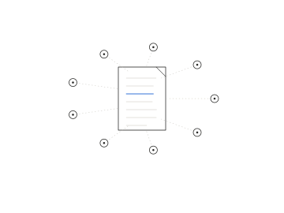

Protocols for Business
A research group of the Protocol Institute. We study how organizations coordinate through protocols, and what changes as AI agents join the work. Over the year, members build protocol vision: the capability to see the rules a business really runs on, and to help decide which should be hard.

Next session Monday 2 November · 15:30 UTC
The Hugging Face incident and the road ahead OpenAI, 2026 · Kickoff
What you’ll learn to do
- See
Spot the protocols a business runs on, written and unwritten, by watching and logging them, about a hundred over the year.
- Read
Read incidents and agent traces for where rules held, broke or were missing, in the sessions.
- Design and test
Decide what to harden and what to keep soft, and try it in a case study or the simulation.
- Write it up
Describe a messy system so the people inside it recognise it, on the blyg or in a case brief.
These are the skills in our job description for a Business Protocol Lead.
What we do



Advisory
Working on this inside your organization?
Tell us what you’re working on and where you’d like help. The facilitators will get back to you.
Guides, cases, workshops and essays so far are listed in About.